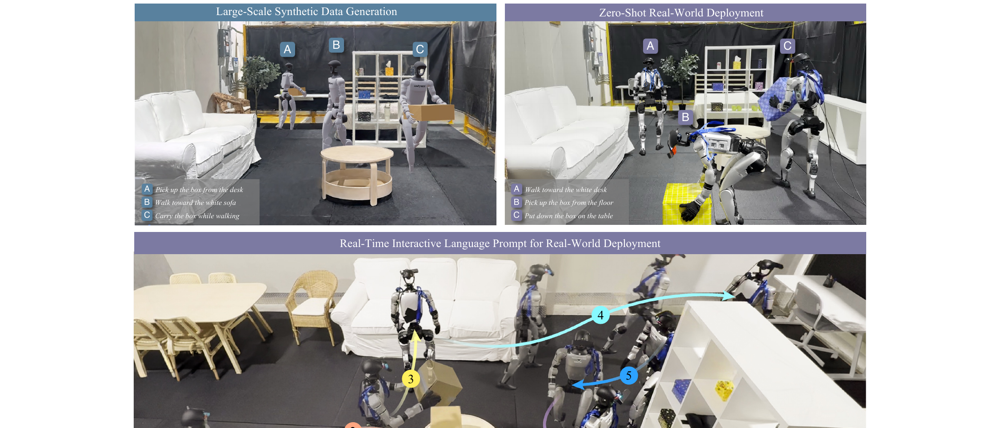
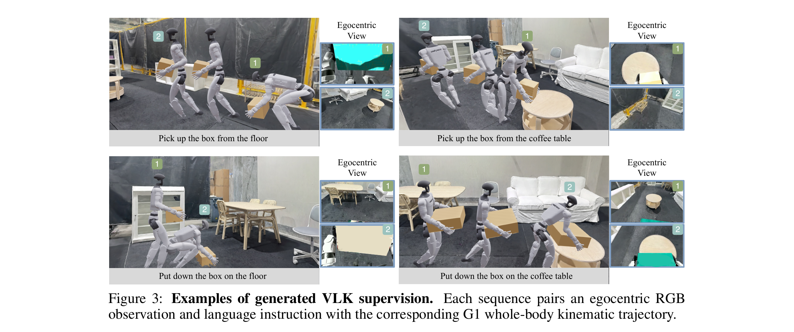
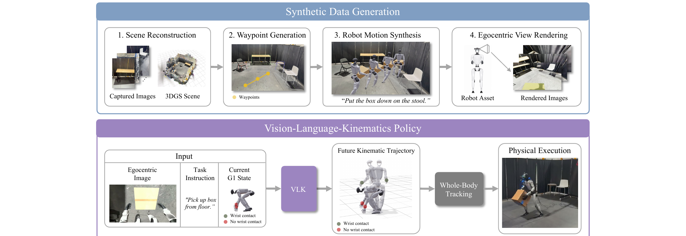
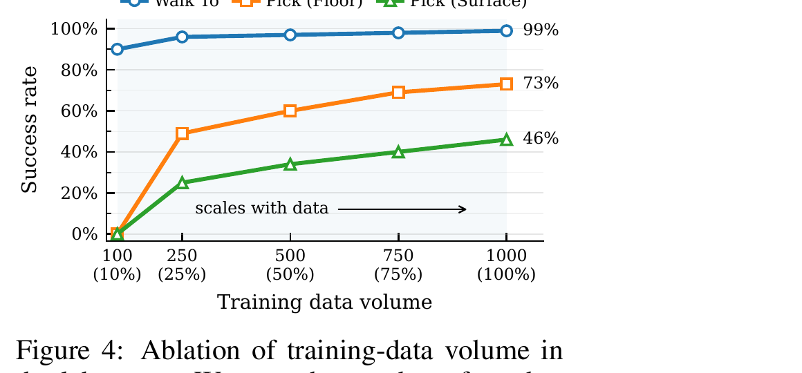

总览：把 VLA 的 "A" 换成 "K"，数据就能凭空造
要让人形机器人"看一眼房间、听一句话、然后走过去把箱子搬到指定位置"，你需要一种三元组配对数据：同步的第一视角图像 + 语言指令 + 机器人可执行的全身轨迹。问题是这种数据没有现成来源——真机遥操作能采但又贵又难扩展；人体动作捕捉有全身姿态但没有配套的机器人第一视角；第一视角视频数据集有画面但没有机器人轨迹。VLK 的破局点非常巧：不要预测"动作（Action）"，改成预测"运动学（Kinematics）"。因为动作里含动力学、必须靠真机 rollout 才能采；而运动学只是几何+运动、可以在重建出来的虚拟场景里凭空合成。于是他们在 3DGS 重建的真实房间里，用特权信息合成全身运动、事后渲染第一视角，600 GPU-小时造出 48,000 条配对数据、零人工，训出的策略直接零样本上真机 Unitree G1。
这就是标题里 VLK = Vision-Language-Kinematics 的含义——它是对当下主流 VLA（视觉-语言-动作）范式的一个关键替换。"把 kinematics 作为输入/接口的一部分"正是这套方法能成立的支点，§03 会专门拆开。先看它长什么样：

① 合成数据管线（§02）：3DGS 重建真实场景 → 特权信息合成全身运动 → 事后渲染第一视角，造出 V-L-K 三元组。
② VLK 策略（§03）：吃"第一视角图 + 语言 + 当前 G1 运动学状态"，从 π₀.₅ 初始化，用 flow matching 预测未来 1 秒的全身运动学轨迹（含腕部接触标签）。
③ 全身追踪器（§04）：一个 contact-aware whole-body tracker（SceneBot）把预测的运动学转成真机关节动作——它对视觉和语言"失明"，只跟运动学参考。
合成数据管线：4 步在重建场景里造 48k 条
上一节说"运动学可以合成"，但具体怎么合成一条既视觉真实、又机器人可执行的配对轨迹？关键技巧是解耦：先用特权信息（物体位姿、碰撞几何、可行走区域）在仿真世界里"作弊式"地生成合法的全身运动，再事后（after the fact）把第一视角画面渲染出来。这样"生成什么行为"和"渲染成什么样"两件难事被拆开、各个击破，才能把数据量放大好几个数量级。
第 1 步：场景重建（Scene Reconstruction）
用 iPhone 14 Pro 的 Polycam（RGB + LiDAR 深度）扫描室内环境，优化出一个米制尺度的 3D Gaussian Splatting（3DGS）表示，保留真实外观和空间布局。再人工标注：物体的语义 3D 包围盒 + 可行走区域。
输入是什么：相机图像或视频，加上任务指令和机器人当前状态。它们还是原始观测，模型尚未把它们变成可用于预测或控制的特征。
这一步究竟做什么：用 iPhone 14 Pro 的 Polycam（RGB + LiDAR 深度）扫描室内环境，优化出一个 米制尺度的 3D Gaussian Splatting（3DGS） 表示，保留真实外观和空间布局。再人工标注：物体的语义 3D 包围盒 + 可行走区域。
输出到哪里：一个可渲染或可交互的数字场景表示。这个结果会交给下一步“Waypoint 生成”继续处理。
为什么不能省略：只复制外观不能产生可信交互；需要把视觉表示与碰撞、关节或动力学对应起来，策略训练才有物理意义。
第 2 步：Waypoint 生成
基于标注，对每个任务采样任务相关物体、可行的初始位姿、稀疏 waypoint，并用模板实例化语言指令（如"walk to the [object]"、"put down the box on the [surface]"）。这一步把"任务"具体成场景里的约束。
输入是什么：来自上一步“场景重建（Scene Reconstruction）”的产物：一个可渲染或可交互的数字场景表示。本步骤还会按论文设置读取当前条件、时间步或训练信号。
这一步究竟做什么：基于标注，对每个任务采样任务相关物体、可行的初始位姿、稀疏 waypoint，并用模板实例化语言指令（如"walk to the [object]"、"put down the box on the [surface]"）。这一步把"任务"具体成场景里的约束。
输出到哪里：一个或多个候选未来、动作或轨迹，以及必要的中间状态。这个结果会交给下一步“机器人运动合成（特权信息作弊）”继续处理。
为什么不能省略：它承担上下两步之间的接口；缺少它，前一步产生的信息无法以正确格式或正确含义传到下一步。
第 3 步：机器人运动合成（特权信息作弊）
用两个条件扩散模型合成 G1 全身轨迹：导航模型（训练自 BONES-SEED 数据）走向物体；交互模型（把 OMOMO 人-物交互经 OmniRetarget 重定向到 G1）生成手-物耦合轨迹。此时可以用上帝视角的物体位姿、几何、可行走区域，保证运动合法、不穿模。
输入是什么：来自上一步“Waypoint 生成”的产物：一个或多个候选未来、动作或轨迹，以及必要的中间状态。本步骤还会按论文设置读取当前条件、时间步或训练信号。
这一步究竟做什么：用两个条件扩散模型合成 G1 全身轨迹：导航模型（训练自 BONES-SEED 数据）走向物体；交互模型（把 OMOMO 人-物交互经 OmniRetarget 重定向到 G1）生成手-物耦合轨迹。此时可以 用上帝视角的物体位姿、几何、可行走区域 ，保证运动合法、不穿模。
输出到哪里：一个或多个候选未来、动作或轨迹，以及必要的中间状态。这个结果会交给下一步“第一视角事后渲染”继续处理。
为什么不能省略：它承担上下两步之间的接口；缺少它，前一步产生的信息无法以正确格式或正确含义传到下一步。
第 4 步：第一视角事后渲染
在 Isaac Sim 里回放合成好的 G1 轨迹，装一个虚拟 ZED 2i 头部相机（外参对齐真机），把第一视角 RGB 渲染出来。加视觉域随机化（光照、相机外参、焦距扰动）来抗 sim2real 视觉差。至此一条 (第一视角图, 指令, 全身运动学) 配对就造好了。
输入是什么：来自上一步“机器人运动合成（特权信息作弊）”的产物：一个或多个候选未来、动作或轨迹，以及必要的中间状态。本步骤还会按论文设置读取当前条件、时间步或训练信号。
这一步究竟做什么：在 Isaac Sim 里回放合成好的 G1 轨迹，装一个虚拟 ZED 2i 头部相机（外参对齐真机），把第一视角 RGB 渲染出来。加 视觉域随机化 （光照、相机外参、焦距扰动）来抗 sim2real 视觉差。至此一条 (第一视角图, 指令, 全身运动学) 配对就造好了。
输出到哪里：经过本步骤处理、含义更明确的中间结果。这是图中这条链路的最终产物，随后会进入真实执行、模型更新或指标评测。
为什么不能省略：它把前面得到的内部结果落实为可执行动作、可训练模型或可解释指标，完成从方法到结果的最后一步。
产量：每个布局每个模式合成 1000 条，共 48,000 条轨迹。单张 L40S 上，合成 1000 条运动约 4 小时、渲染约 8.3 小时，且可跨布局/模式并行——所以"场景重建+标注"一次性做完后，数据可以近乎自动地大批量生产。生成的配对长这样：

展开原文 · 解耦带来的核心优势
"The key advantage of such a system is the decoupling it enables. We can prescribe the language commands, leverage privileged information in the simulated world (e.g., object poses, collision geometry, walkable regions) to ease the challenge of behavior synthesis, and render the corresponding egocentric observations as RGB images after the fact."
这套管线的护城河是数据生成 pipeline 本身（3DGS 重建 + 特权信息运动合成 + 事后渲染），不是模型。它依赖几个现成积木：3DGS、人-物交互合成（OMOMO）、运动重定向（OmniRetarget）、运动追踪 tracker（SceneBot）。要复用这条路线，得先把这几块 infra 搭起来。
Kinematics 作为接口：输入与输出活在同一个空间 ★核心
这是全文最值得关注的设计。上一节造好了数据，现在看策略怎么用运动学。VLK 最漂亮的设计是：运动学同时是"输入"（当前机器人状态）和"输出目标"（未来轨迹），而且两者用同一个表示。输入端喂当前运动学状态 = 给策略一个"身体在哪"的锚（等价于 OpenHLM Q1 说的 proprioception 必须喂）；输出端预测未来运动学 = 直接产出一段 tracker 能跟的参考运动。因为进和出同空间，用 flow matching 在"未来运动学"上做生成就非常自然。下图的下半行就是这套接口：

运动学状态表示 $x_\tau$：进和出的公共语言
每一帧的 G1 运动学状态被编码成这样一个向量（既做输入 $x_t$、也做预测目标）：
- $\Delta x_\tau,\ \Delta y_\tau,\ \Delta\psi_\tau$
- 朝向归一化的 root 平面位移 + yaw 变化。用"相对位移"而非全局坐标，让策略对绝对位置/朝向不变——走到哪都能泛化。
- $h_\tau$
- root 高度。蹲下够地面、站直搬运，全靠它——这是"全身工作空间"的关键维度。
- $\mathbf{R}^{\text{root}}_\tau$
- 朝向归一化的 6D root 姿态。用 6D 而非欧拉角/四元数，是连续表示、对神经网络更友好。
- $\sin(\mathbf{q}_\tau),\ \cos(\mathbf{q}_\tau)$
- G1 关节角 $\mathbf{q}$ 用 sin/cos 双通道编码，避免角度在 ±π 处 wrap-around 造成的跳变（motion-synthesis 圈的常规操作）。
- $\mathbf{c}_\tau = [c^L_\tau,\ c^R_\tau] \in \{0,1\}$
- 左右腕-物体接触标签。被当作运动学状态的"辅助分量"：合成数据里免费可得；部署时自回归预测；tracker 用它激活 contact-aware 腕部行为稳住物体。去掉它，"从地面拿箱"真机成功率直接 0/5——是承重设计。
训练目标：在未来运动学上做 flow matching
策略 $\pi_\theta(o_t, \ell, x_t)$ 预测未来 $H=30$ 帧（1 秒 @30Hz）的轨迹 $\hat{x}_{t+1:t+H}$，从预训练 π₀.₅ 初始化并全量微调，动作空间适配成 G1 运动学表示。用 flow matching 的 $x_0$-prediction：给真轨迹 $x_{t+1:t+H}$、高斯噪声 $\epsilon$、插值系数 $\alpha$，构造带噪轨迹 $x^\alpha = \alpha\epsilon + (1-\alpha)x_{t+1:t+H}$，让策略从带噪版本预测干净轨迹，重建损失 $\mathcal{L}_{\text{traj}} = \|\hat{x}_{t+1:t+H} - x_{t+1:t+H}\|_2^2$。另加脚-地接触预测、root 轨迹一致性、前向运动学精度、脚滑正则等辅助损失提升运动质量。
① 它是让合成监督成立的支点：动作含动力学、难合成难 sim2real；运动学是纯几何/运动，能被"3DGS + 运动合成 + tracker"干净解耦——tracker 吸收动力学 sim2real，VLK 只负责"感知→运动"。
② 进出同空间让 flow matching 在未来运动学上生成很自然，预测出来就是 tracker 能跟的 reference。
③ 接触标签当作运动学的辅助分量是个低成本高杠杆的技巧：合成时免费、部署时自回归、还能驱动 tracker 的抓握稳定。
全身追踪 + 实时部署：谁负责动力学 sim2real
VLK 只吐运动学，真机要的是关节力矩——中间那层就是 tracker。它回答一个分工问题：感知的 sim2real 归 VLK（视觉域随机化），动力学的 sim2real 归 tracker。这个分工正是"预测运动学"能成立的另一半保障。
整条推理链：第一视角图 + 指令 + 当前运动学 → VLK 预测未来 1 秒运动学（含接触标签）→ 转成 tracker 参考格式（下肢关节目标、上身头/腕 6D 位姿、root 目标位姿、二值接触）→ tracker 出关节 PD 目标 → 真机执行。语言指令在一次任务执行中固定，VLK 输出作为下游 tracker 的高层运动目标。
实验：能到什么程度、边界在哪
前面讲了方法很漂亮，这一节泼点冷水看真实水平：导航几乎满分、地面操作还行、桌面操作明显弱；数据 scaling 极度不对称；视觉域随机化是命门；作者自己也诚实地 flag 了 scope 局限。看清边界，才知道哪些能借、哪些是坑。
全系统评测（Table 1 · 真机 + 仿真）
| 场景 | Walk To | Turn Around | Pick (Floor) | Put (Floor) | Pick (Surface) | Put (Surface) |
|---|---|---|---|---|---|---|
| 真机 · Lab | 20/20 | 20/20 | 16/20 | 20/20 | 11/20 | 8/20 |
| 真机 · Apartment | 19/20 | 18/20 | 18/20 | 20/20 | 13/20 | 15/20 |
导航（Walk To / Turn Around）近乎满分，地面操作不错，桌面（Surface）操作明显更难——因为重定向来的交互数据在不同支撑面高度上覆盖有限，抓/放不够可靠。另外："Pick (Floor)" 去掉接触标签后真机 0/5，再次印证 §03 接触标签的承重性。
数据规模的不对称 scaling（Fig 4）

导航容易、操作难：Walk To 在 10% 数据就到 99%；而 Pick (Surface) 从 10% 数据的 0% 一路涨到全量的 46%——接触密集、感知条件的操作，比导航需要多得多的合成数据。这直接告诉你：这条合成路线的瓶颈在"操作"而非"移动"。
视觉域随机化是命门（Table 2）
| 配置 | 走路成功率 % |
|---|---|
| 无随机化 | 41 |
| 仅相机随机化 | 48 |
| 仅光照随机化 | 87 |
| 全随机化 | 90 |
去掉视觉域随机化，走路成功率从 90% 崩到 41%——渲染出来的第一视角要迁移到真机，视觉变化的覆盖至关重要，其中光照随机化贡献最大。这是所有"渲染合成→真机"路线的通用教训。
当前交互合成受 OMOMO 数据集覆盖限制：生成的行为更适合箱子这类大物体的双手搬运，不做精细抓取（如抓杯子）。contact-aware tracker 靠腕-物接触稳住大物体，但没解决精确 grasping。要扩到小物体操作，需要更丰富的交互数据 + 一个为精确抓取设计的底层控制器。
对比 OpenHLM + 工程借鉴
如果刚啃过 OpenHLM，两篇正好是一对镜像：同样的架构骨架（π₀.₅ + tracker），不同的数据哲学。这一节把它们并排，然后回答一个更大的问题——怎么形成不一样的 insight。
VLK × OpenHLM 并排
| OpenHLM | VLK | |
|---|---|---|
| 高层输出 | 全身指令（≈关节目标） | 显式未来运动学轨迹（H=30） |
| 底层 | SONIC tracker | SceneBot tracker（接触感知） |
| 骨干 | π₀.₅ | π₀.₅ |
| 数据来源 | 真机 joint-based 遥操作（40 条/任务，贵） | 全合成 3DGS 场景，48k 条，0 人工 |
| 解决的"配方"问题 | 怎么适配 VLA + 选哪种遥操作接口 | 怎么合成 V-L-K 三元组 |
| proprioception / kinematics | 发现 proprioception 必须喂（Q1） | kinematics 就是接口（进+出）+ 接触标签 |
| 任务范围 | 12 任务 4 类能力（含身体部位当操作器） | 仅导航 + 单物体箱子搬运（OMOMO 限制） |
两篇都落到 "高层出 motion/kinematics，底层 tracker 执行"——SONIC、GR00T、Ψ₀ 也都在往这收。架构已经趋同，真正的差异化在数据轴：OpenHLM 押"真机遥操作配方"，VLK 押"合成运动学规模化"。这条判断对选研究方向最重要。
怎么形成不一样的 insight
拥挤的赛道是"采人形数据 + 训 VLA"（OpenHLM/GR00T/Ψ₀/WholeBodyVLA 都在这里卷）。VLK 的不同赌注是用 Real2Sim2Real 合成运动学、绕开数据采集。它的护城河是数据生成管线，不是模型。要有新 insight，先问：支点是什么，能把哪种昂贵难采的信号变便宜？
对输出 joint-based（≈ kinematic）action 的系统：把当前运动学状态当输入（OpenHLM 的 proprioception 结论 + VLK 的形式化）、把接触标签当作运动学的自回归辅助分量，都是低成本高杠杆、可以直接加的改动。
VLK 自己 flag 了"不做精细抓取、受 OMOMO 覆盖限制"。"合成运动学 + 精细操作"是个没被解决的缝——要么攻这个缝，要么把 OpenHLM 的真机配方严谨度和 VLK 的合成规模化缝起来（真机少量高质量 + 合成大规模）。
① 只在箱子搬运 + 导航上验证，无精细抓取；② 依赖一堆 infra（3DGS 重建、OMOMO、OmniRetarget、SceneBot tracker），复现门槛不低；③ 操作任务强依赖数据量（Pick Surface 才 46%）；④ 渲染→真机高度依赖视觉域随机化（去掉从 90%→41%）。
VLK = 把 VLA 的 A 换成 K（预测运动学而非动作）→ 运动学能在 3DGS 重建场景里纯合成（48k 条 / 0 人工）→ tracker 吸收动力学 sim2real。要点：架构趋同已成事实，差异化要押在"数据怎么来"这根轴上；kinematics-as-input + 接触标签可直接借；"合成 + 精细操作"是留给后来者的缝。